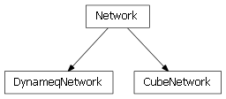
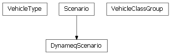
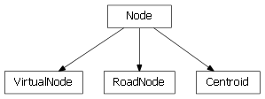
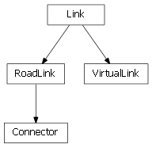

SFCTA uses DTA Anyway to generate a DTA network using this series of scripts, each one adding a new layer of data onto the network. See Batch File for Entire Import Process
DTA Anyway is a python module that facilitates network coding, analysis and visualization for DTA (Dynamic Traffic Assignment).
This code has been tested with Python 2.6.4.
Required python modules:
Optional python modules:

| dta.Network | Base class that represents a DTA Network. Networks exist on a continuum between |
| dta.DynameqNetwork | A Dynameq DTA Network. |
| dta.CubeNetwork | A DTA Network originating from a Cube network. |

| dta.Scenario | Class that represents a DTA Scenario, and all that it entails. |
| dta.DynameqScenario | A Dynameq Scenario. |
| dta.VehicleType | Class that represents a vehicle type. |
| dta.VehicleClassGroup | Represents a group (or a set) of VehicleClasses, which are the classNames in VehicleType. |

| dta.Node | Base class that represents a node in a network. |
| dta.RoadNode | A Node subclass that represents a road node in a network. |
| dta.VirtualNode | A Node subclass that represents a virtual node in a network. |
| dta.Centroid | A Node subclass that represents a centroid node in a network, which is the origin or destination |

| dta.Link | Base class that represents a link in a network. |
| dta.RoadLink | A RoadLink in a network. Both nodes must be RoadNodes. |
| dta.VirtualLink | A VirtualLink is a Link that connects a Centroid with |
| dta.Connector | A Connector is a RoadLink that connects a RoadNode with a Centroid or a VirtualNode. |
| dta.TimePlan | Represents generic signal timeplan |
| dta.PlanCollectionInfo | Contains user information for a collection of signals belonging to the |
| dta.Phase | A phase consists of timing (green, yellow and red times) plus a set of PhaseMovement instances |
| dta.PhaseMovement | Represents a movement specific to a particular phase. |
| dta.TPPlusTransitNode | Representation of a transit node for a TPPlusTransitRoute |
| dta.TPPlusTransitRoute | Representation of a transit line read from Cube line file (TRNBUILD or PT) |
| dta.TransitLine | Transit Line representation for a DTA Network. |
| dta.TransitSegment | A piece of a TransitLine, basically a link with a transit line on it. |
| dta.Movement | A movement consists of an incoming link, and outgoing link, and attributes |
| dta.Path | A path in the network represented by a sequence of links |
| dta.ShortestPaths | Shortest path algorithms and various utilities |
| dta.CountsVsVolumes | Generates corridor plots. |
| dta.Demand | Class that represents the demand matrix for a Network |
| dta.DtaError | Base class for errors in the dta package. |
| dta.Logger | |
| dta.MultiArray | Multidimentinal array of custom numpy data types supporting |
| dta.Time | Class that represents a time (without a specific date). |
| dta.Utils | Utility functions for use throughout DTA Anyway. |